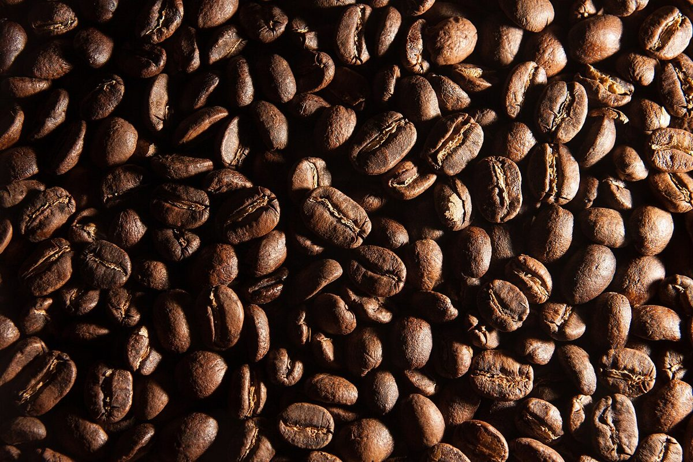
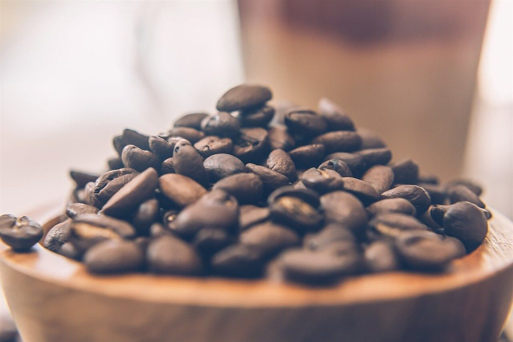

制作側の連想
「ミクロ」と一円玉の直径
店名の由来は分かりません。制作側は「ミクロ」という響きから、小さな単位、たとえば一円玉の直径20ミリを連想しました。そこでこのサイトでは、写真を硬貨ほどの丸い窓に切り取り、ページごとに硬貨の直径(φ)の数字を付けています。制作側の連想で、お店の理念・由来とは無関係です。
直径くらべ
φ20からφ26.5まで。
- 1円玉φ20mm
- 50円玉φ21mm
- 5円玉φ22mm
- 100円玉φ22.6mm
- 10円玉φ23.5mm
- 500円玉φ26.5mm
数値は一般に知られる硬貨の直径です(中心をそろえて重ねた図)。硬貨の絵や写真は使っていません。
コイントレイ
丸く切り取った、6枚のイメージ。
写真は白河市やお店のものではありません。国外・撮影地不明のフリー素材を、丸い窓に切り取って並べています。




ご案内
お店のこと(確認できたものだけ)
| 所在地 | 〒961-0972 福島県白河市立石53 |
|---|---|
| 電話 | なし |
| 営業時間 | 準備中 |
| 定休日 | 準備中 |
| ご予約 | 準備中 |
| 駐車場 | 準備中 |
| SNS | Instagram @microcafe722 |